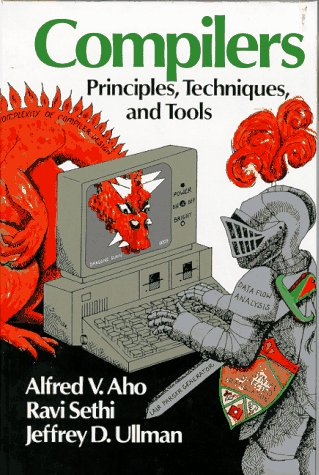
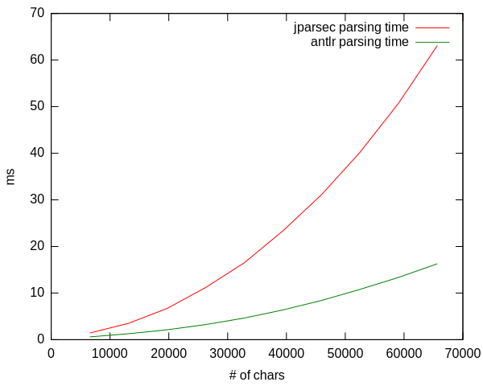

jparsec
Parsing Made Easy
Traditional Parsing
Traditional Parsing
Standard language theory: Rationals, Context-free, Contextual, $LL$, $LR$, $LALR$...
Lexer: Transform a stream of characters into a stream of tokens
Parser: Transform a stream of tokens into a parse tree
Tools: Antlr, Javacc, byacc/j... Takes as input an annotated BNF grammar and output executable code
Shortcomings
Grammar is expressed in different language(s)
Preprocessing step at build time to generate parsers
More complex builds, plugins, tools, tools, tools...
There has to be a Better Way...
What is a Parser anyway?
- A parser is a function from strings to stuff
- A partial parser is a function from string to parse-trees and remaining string:
$$ \pi: \Sigma^* \longrightarrow \Sigma^* \times T$$
- A full parser is function from string to parse-trees:
$$ \lfloor \pi\rfloor: \Sigma^* \longrightarrow T$$
- A full parser can be built from a partial parser
$$ \lfloor \pi(w)\rfloor = \{ t | (\epsilon,t) \in \pi(w) \} $$
???

Parser Combinators...
are pure functions...
that can be combined arbitrarily...
to build complex parsers from simple ones
Advantages
Grammar and semantics are written in the same language
Language can be more easily grown piecemeal
Parser is easier to (unit) test $\longrightarrow$ TDD
Parsers can be reused, factorized in libraries...
Implementations for a wide variety of programming languages
jparsec
Originally developed by Ben Yu (see original site on Codehaus)
Ported to C# and Ruby
Now hosted and maintained on github
Demo
Parser Combinators in Actions
Example 1
Typing expressions
{<?> [{<?> aField :: INTEGER, anOptional :: UUID?}] anotherField :: FLOAT}
{<?> aField :: (STRING-> INTEGER )}
{<LEGITIMATE_SON> [{<?> aField :: INTEGER, anOptional :: UUID?},
{<NAMED_SCHEMA> a :: INTEGER, b :: UUID?}] aDate :: DATETIME}
Example 2
Boolean search queries
((SAUCISSON OR SAUCISSONS) ((INTOXICATION* ALIMENTAIRE* ADJ 1)
OR SANT[EÈÉËÊ] OR NUTRITION* OR APPORT OR APPORTS) WITHIN 25)
OR ((SAUCISSON OR SAUCISSONS) (AIL OR LAIL) ADJ 1) OR
((SAUCISSON OR SAUCISSONS)
(SALAGE OR SALAGES OR FUMAGE OR FUMAGES OR
(CHAIR CUITIER* ADJ 1)) WITHIN 30) ...
Example 3
A simple imperative language
// Totals for the first displayed breakdown column
IF ( NOT bIsBkd AND ( NOT bIsTitle ) ) THEN
{
IF ( iLevel == iFirstDisplayedBreakdown
OR ( ( iLevel == ( iFirstDisplayedBreakdown + 1 ) )
AND bIsVerticalTotal ) ) THEN
{
SetBackgroundColor(235, 235, 235),
SetFontBold(TRUE)
},
// note the absence of parens around conditional...
IF Net_total<0. AND ( NOT bIsTotal )
AND HasTitle( "Net total" )==TRUE THEN
{
SetBackgroundColor(255, 212, 148)
//SetFontBold(TRUE)
}
}
Performance?
Warning Performance of parsing is rarely a bottleneck in compilers/interpreters...
Compared two parsers for the same language, one in jparsec, another in Antlr
Performance
jparsec vs. Antlr
Work in Progress
Incremental parsing
Using differentiation of parser combinators
Error recovery
Can skip a rule to some token (eg. semicolon) on errors
Generalized streams parsing
Can express grammar over stream of arbitrary objects, not just characters
Generators
Dualize parsers, For all those post-modern programmers (and for testing too...)
Thank you!
Pull requests are welcomed!